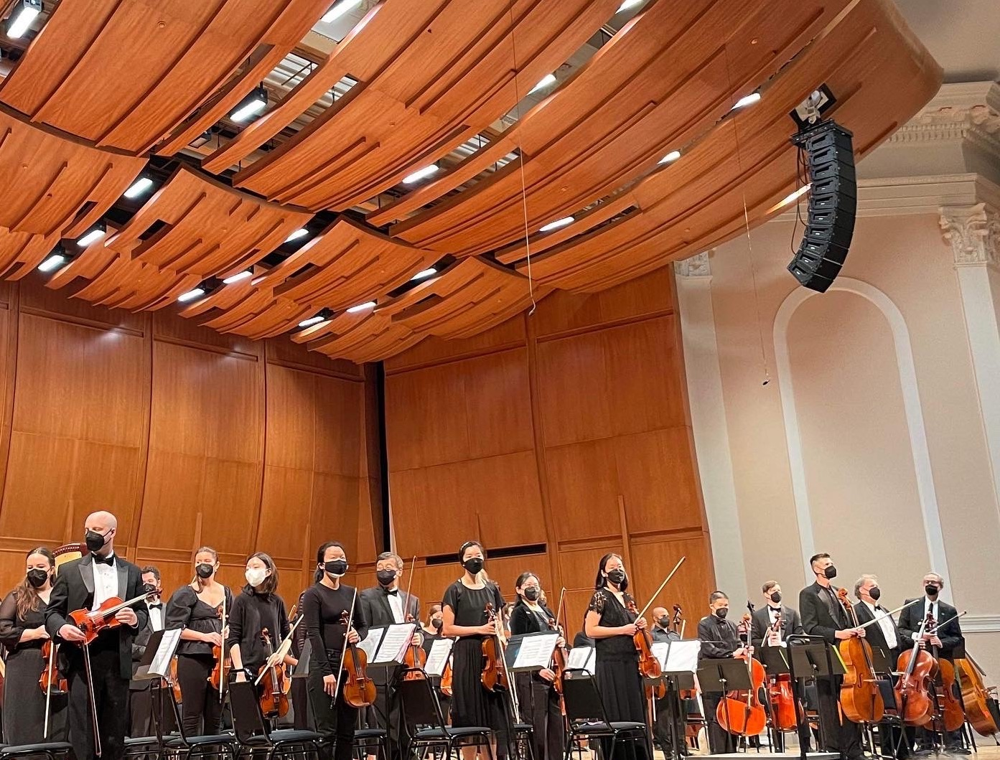

About Me
Learn more about my data science journey!
About Me
Hello! I'm Mary Solomon, a devoted data scientist with a diverse background and a proven history of impactful projects. My approach to data science is grounded in an interdisciplinary mindset, the art of storytelling with data, and the discovery of actionable insights.
My dedication extends to crucial areas such as social good, ethical AI/ML, DEI, and consumer insights. This commitment is evident in my recent role as a Data Scientist with the Duke University AI Health Data Science Fellowship program, where I collaborated with cross-functional teams on seven projects focusing on ethical AI, health equity, and quality of patient care.
My interest in socially conscious data science was sparked by a presentation on Data Science for Social Good at the Grace Hopper Conference. Helping society through my work is a core value, and witnessing this value come to life in the field of data science ignited my passion. Subsequently, as a Graduate Fellow with the University of Virginia’s Data Science for the Public Good program, I contributed to data science projects addressing ethical issues for the betterment of humanity.
Beyond social good and ethical AI, I am intrigued by the convergence of data science with creative industries such as music, media, and entertainment. This fascination is driven by my advocacy for the arts and my lifelong connection to music. Fortunately, my undergraduate data science and master's of applied statistics programs at Bowling Green State University nurtured my desire to merge data and music. This is evident in my undergraduate capstone: Market Research on Student Concert Attendance at BGSU's College of Musical Arts and my Master's Thesis: Multivariate Analysis of Korean Pop Music Audio Features.
To me, Data Science represents the ideal fusion of analytical and creative pursuits, presenting boundless opportunities for growth and the capacity to make a positive impact. I am enthusiastic about the potential that data science holds and eager to contribute my skills and passion to future endeavors.
Hobbies
Outside of my day job, I love devoting quality time to my hobbies and friends. I love nature and enjoy going on frequent walks/hikes. I’m also a big foodie and really enjoy exploring the local food scene or seeking out food adventures.
Before I discovered data science, I was pursuing a career in music! When I entered my undergraduate studies at BGSU, I was originally a violin performance major. Although I walked away from that path, music still plays a big role in my life. I’m currently a violinist with the Durham Medical Orchestra and take occasional gigs at weddings, events, and services. In addition to violin, I play piano and ukulele.
I enjoy volunteering and connecting with my local community. I love taking on volunteer shifts with local foodbanks, habitat for humanity, and local events like arts & music festivals. This past summer I volunteered as a counselor for Camp China: a camp for Chinese adoptees and their families to engage in cultural connection and community building.